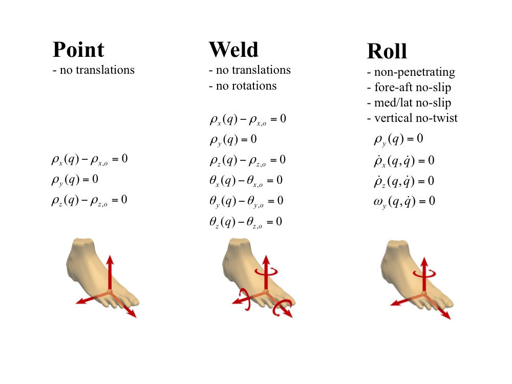

The topics covered in this section include:
Equations of Motion
The equations of motion (EOMs) of an OpenSim model are given by:
\left[ M \right] \ddot{q} = G(q) + V(q,\dot{q}\,) + S(q,\dot{q}\,) + \left[ R \right] fwhere M is the mass matrix, q are the generalized coordinates, G is the generalized force due gravity, V is the force due to Coriolis and centrifugal effects, S is the resulting generalized force due to contact elements, and f is a muscle force or any other applied force transformed to a generalized force via a force transmission matrix, R (which, for a muscle, contains its moment arms). The induced acceleration of any force contributor is simply
\ddot{q}_i = \left[ M \right]^{-1} \left\{ F_i \right\}where Fi is the contribution of any force (gravitiation, Coriolois, contact, or muscle) to the acceleration. For example, calculating the acceleration caused by the application of a muscle force would involve solving
\ddot{q}_m = \left[ M \right]^{-1} \left[ R \right] f_mAn induced acceleration analysis with state-dependent contact forces represented by S (including externally-applied forces as functions of time) poses unique challenges because these forces are not independent of the other forces acting on the model. In most cases, S represents the reaction forces due to the model's interaction with its environment. During walking, for example, the ground reaction force is the force applied to the model by the ground, which includes the contributions of gravity, velocity, and muscle forces to the reaction measured by a force plate. Since internal forces, such as muscles, do not directly accelerate the center of mass (it is the reaction force with the environment that causes the mass center acceleration), it is also necessary to determine how an internal force contributes to an external reaction force. Therefore, in computing the acceleration of the system due to individual force contributors, it is essential to decompose the external reaction force in order to include only the partial (induced) contribution of each internal force to the external reaction force and to the acceleration of the system. In this case, the acceleration induced by a single force contributor is:
\ddot{q}_i = \left[ M \right]^{-1} \left\{ F_i + S_i \right\}where Fi is the force contributor we are interested in analyzing, be it gravity, muscle forces, or ideal torque actuators. In this case, both the induced acceleration and the partial (induced) contact force, Si, are unknown.
There are two fundamental approaches for solving this problem. One approach is to slightly augment (or perturb) the force of interest, Fi, (by 1N) and integrate the equations of motion a small interval forward in time to determine the corresponding change in the reaction force. This method is commonly referred to as a perturbation analysis. This approach yields the sensitivity of the contact force due to a unit change in force, and multiplying this change by the applied force yields its induced reaction force. There are several issues with this approach, including the need to use very stiff contact springs in order for the contact force sensitivity to remain linear over a small integration interval, which makes forward integration of the system dynamics slow. Second, results are sensitive to the selection of the contact stiffness and the time interval over which the change in contact force is evaluated. Applying stiff 3-dimensional linear and torsional springs approximates rigid constraints imposed by a weld constraint, effectively eliminating the 6 degrees of freedom at the point of contact.
The other approach, which is the current implementation of the Induced Acceleration Analysis, replaces the contribution of contact with an appropriate kinematic constraint. Kinematic constraint reaction forces are resolved simultaneously with the constrained equations of motion:
\begin{align}
\left[ M \right] \ddot{q} + \left[ C \right]^{\mathrm{T}} \lambda &= G(q) + V(q,\dot{q}\,) + \left[ R \right] f \\
\left[ C \right] \ddot{q} &= B(t,q,\dot{q}\,)
\end{align}
where the constraint matrix, C, maps from components of constraint reaction forces \lambda , to a system generalized force (replacing the applied external force or compliant contact model, S). The kinematic constraints on positions and velocities are differentiated so that they are expressed in terms of conditions on the coordinate accelerations. The left-hand side contains the accelerations and the right-hand side defines the conditions on accelerations described as a function, B, of time, system position, and/or system velocity.
Using this approach with kinematic constraints does not require forward integration to estimate the response of contact as in the perturbation method, and results in a computationally efficient and precise analysis.
Constraints to Model Contact
OpenSim provides several constraint types that are supported with an Induced Acceleration Analysis, including Point, Weld, and RollingOnSurface constraints, as summarized in the figure below. A Point constraint forces two points on separate bodies to remain coincident, but allows free relative rotation about that point, similar to a ball-and-socket joint. A Weld is similar, but also constrains the orientation of the two bodies to remain fixed to one another. A RollingOnSurface describes a constraint on a rolling body that is in contact with a plane defined on another body (Hamner et al., 2010). Translations of the point of contact normal to the plane are constrained only if the point of contact penetrates into the surface of the plane; otherwise, the point is free to lift off. When the point is in contact with the plane, its velocity relative to the plane is constrained to be zero in the plane. Finally, when in contact with the plane, the rolling body is constrained not to rotate about the normal of the surface (i.e., no twisting) at the point of contact. These four individual constraints define the kinematic behavior known as pure rolling. The point at which the constraint is applied is obtained from the point of application of a corresponding external force being applied during a forward simulation. In the case of the Weld, the orientations of the bodies are set according to current values of the generalized coordinates.
Figure: Available constraint types for an Induced Acceleration Analysis
Superposition
When analyzing the results of an induced acceleration analysis, it is important to test whether the sum of the accelerations induced by each muscle and by gravity is equal to the total acceleration. Since the induced acceleration analysis determines the acceleration of each actuator to the total acceleration, summing the induced acceleration of all the actuators should give the total acceleration. For example, you may want to compute the sum of the contributions of each muscle force and other forces to mass center acceleration and compare that to the net acceleration of the mass center (see Liu et al., 2006 and Hamner et al., 2010). The output file for each coordinate or body acceleration contains the "total" or summed induced accelerations from all of the actuators. This total acceleration can be compared to the original accelerations of joints or the mass center which can be obtained by running the "Kinematics" analysis or "Body Kinematics" analysis in OpenSim. OpenSim also can report constraint reaction forces, such that the induced reaction forces can be summed and compared to the total simulated and/or measured reaction forces to test the accuracy of the constraint in representing the contact conditions.
{kind=link}